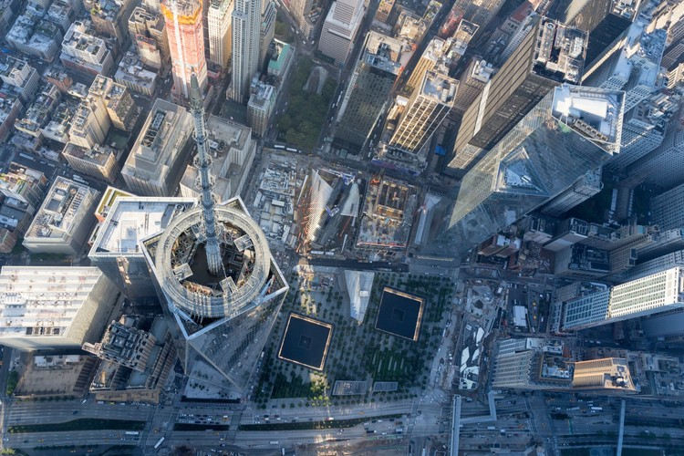
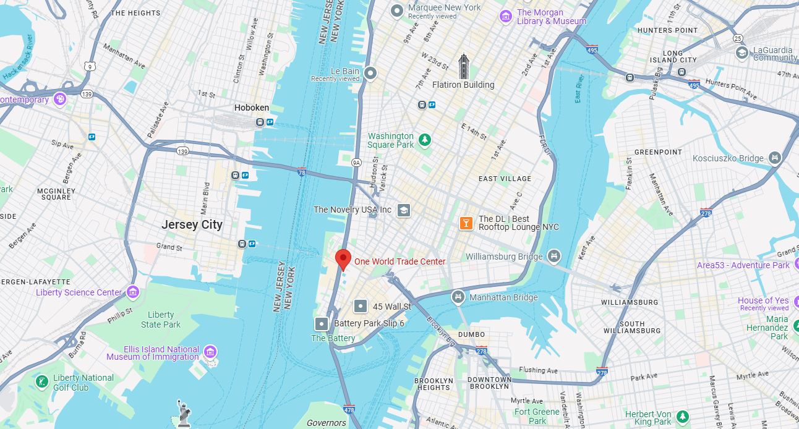

Gallery




A symbol of resilience and strength.
One World Trade Center, also known as the Freedom Tower, has a rich history deeply connected to the events of September 11, 2001. After the original World Trade Center was destroyed in the attacks, there was a strong desire to rebuild and honor the lives lost while creating a symbol of hope and resilience. The decision to build the Freedom Tower on the same site was a step toward healing, and the design of the building aimed to symbolize America's strength, recovery, and commitment to freedom.
The dedication of One World Trade Center was not just the completion of a building, but a symbol of the resilience of New York City and the entire nation. It stands as a tribute to those lost and a beacon of hope for the future, showing that even in the face of tragedy, life moves forward. The building's design incorporates elements that pay homage to the past, such as the memorial at its base, while representing a new era of safety, strength, and freedom for America.
The planning for the new World Trade Center began shortly after the attacks, with a design competition launched in 2002. The winning design, created by architect David Childs, was chosen for its symbolic height of 1,776 feet, reflecting the year of American independence. The building's construction began in 2006, and it was completed in 2013. During its construction, the Freedom Tower faced many challenges, including the need for advanced safety features to prevent future attacks and the integration of memorials to honor the victims.
The dedication of One World Trade Center was not just the completion of a building, but a symbol of the resilience of New York City and the entire nation. It stands as a tribute to those lost and a beacon of hope for the future, showing that even in the face of tragedy, life moves forward. The building's design incorporates elements that pay homage to the past, such as the memorial at its base, while representing a new era of safety, strength, and freedom for America.
One World Trade Center is not only the tallest building in the United States but also an architectural marvel. The building's design includes a unique spire that reaches 1,776 feet, making it an iconic feature of the New York City skyline. Its base is made of reinforced concrete and steel, designed to withstand extreme events, while its sleek, glass exterior reflects the skyline and surrounding area.
Visitors to the One World Observatory can enjoy 360-degree views of New York City, offering breathtaking sights of landmarks such as the Statue of Liberty, the Empire State Building, and the Brooklyn Bridge. The observatory, located on the 100th, 101st, and 102nd floors, is one of the highest observation decks in the world.
The building's lower floors house the 9/11 Memorial and Museum, which honors the victims of the September 11 attacks. The museum features artifacts, photographs, and exhibits that highlight the impact of that day on the world and commemorate the lives lost. One World Trade Center's design also includes elements such as a large public plaza, retail spaces, and modern office environments, symbolizing both remembrance and the resilience of the human spirit.
One World Trade Center on map
Height - One World Trade Center stands at an impressive 1,776 feet tall, making it the tallest building in the Western Hemisphere.
Completed in 2013 - The building was completed and opened in 2013, a decade after the tragic events of September 11, 2001.
Unique Design - The building's design incorporates advanced safety features, including a reinforced concrete core and blast-resistant glass.
9/11 Memorial - The building is part of the larger World Trade Center complex, which includes the 9/11 Memorial and Museum.